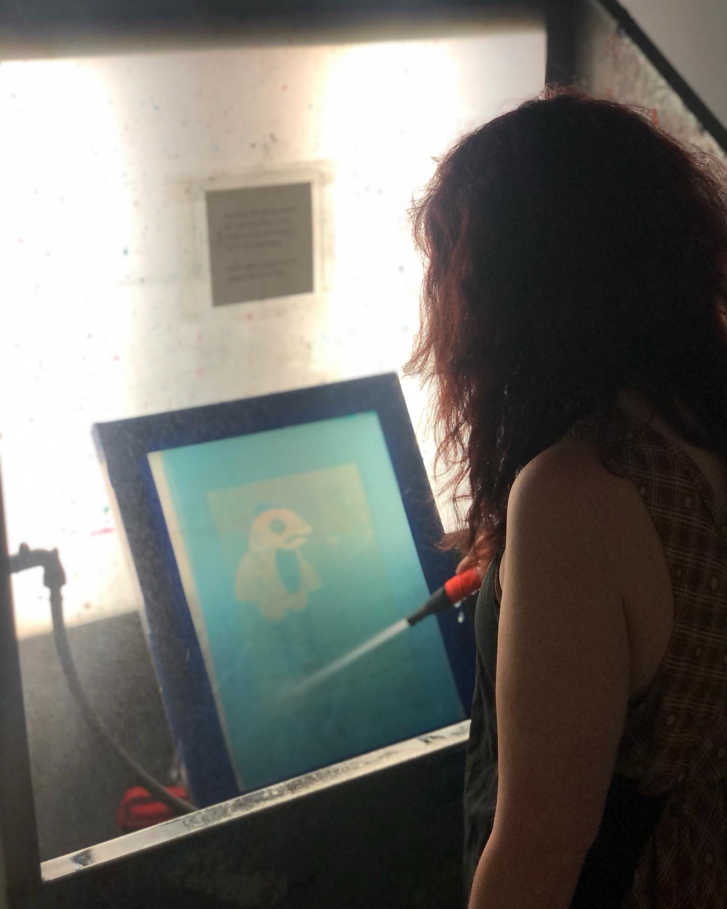

Aarin Wilson is an illustration and print-making student at The University of the Arts in Philadelphia, PA. For any inquiries about my work, or for those interested in collaboration, please email me at Aarin.wil@gmail.com
Aarin Wilson is an illustration and print-making student at The University of the Arts in Philadelphia, PA. For any inquiries about my work, or for those interested in collaboration, please email me at Aarin.wil@gmail.com
You can also find me on Instagram, TikTok, and Spotify. I do not have a dontation link set up yet, but you can reach out to me directly if you would like to support my work.
Webpage designed by Aarin Wilson, and developed by Forest(admin). Big thanks to David Shrigley for design inspiration. This page is being activley developed and in version Alpha v1.6.